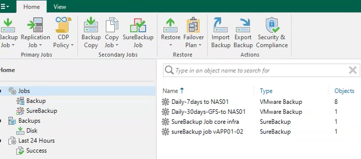
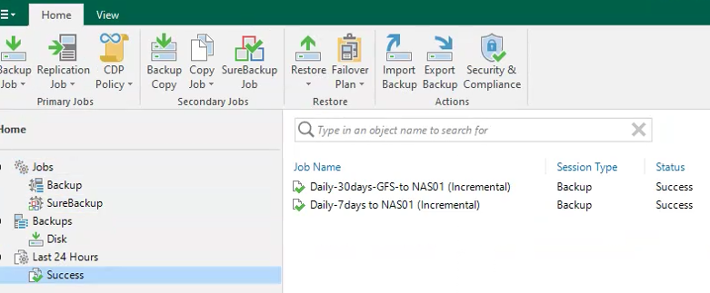

Tutorial – Backup & Disaster Recovery
This check verifies that backup jobs are properly configured and operational.
Backup job issues can impact:
Open the backup console and navigate to:
Home → Jobs
Verify that:

Check the latest execution status of the backup jobs.
Home → Last 24 Hours
Verify that:
